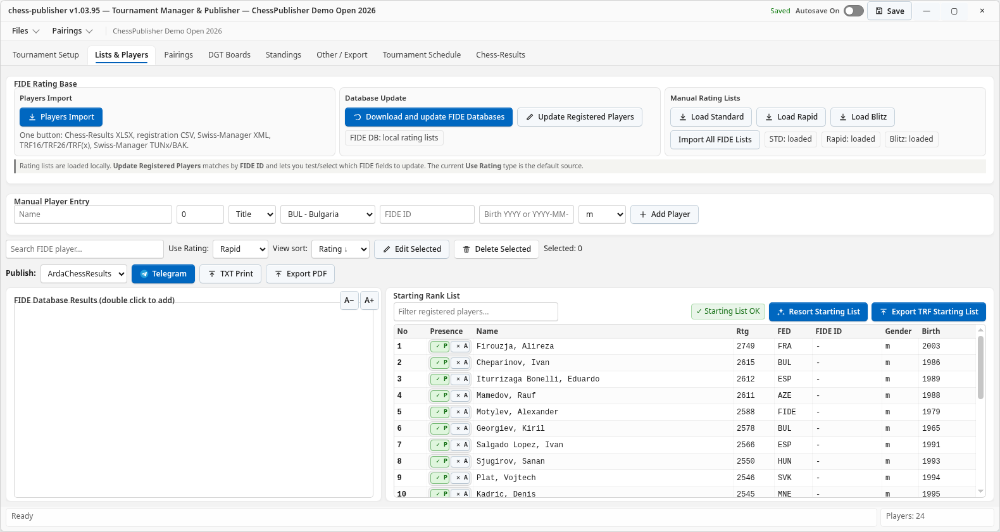
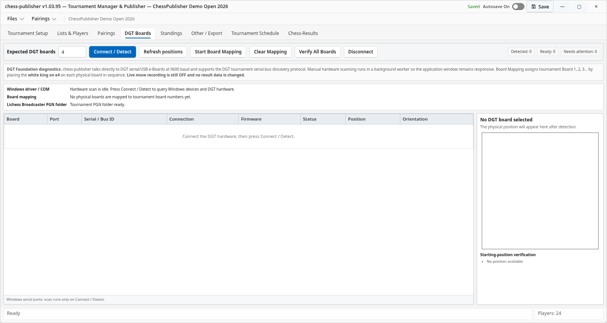

64-bit desktop application with local tournament storage.
Local Swiss Dutch pairing generation with independent verification options.
Your tournament remains locally operable even when the Online Hub is unavailable.
About this manual
Understand what belongs to the stable desktop core and what belongs to the beta online platform.
Chess-Publisher is a local-first tournament management application. The active tournament is shared across the application tabs, so changing the active event changes the working tournament everywhere in the interface.
The program can be used entirely as a local Windows tournament tool. Online publishing is optional. The classic Chess-Results integration and the new Chess-Publisher Online Tournament Hub are separate publication paths.
Main application areas
- Tournament Setup
- Lists & Players
- Pairings and result entry
- Standings
- Tournament Schedule
- Regulations
- Chess-Results
- Online Hub (beta builds)
- DGT Boards
- Other / Export
Installation and first launch
Use the installer for normal use or the portable ZIP for testing and controlled deployments.
Windows installer
- Download the latest Windows installer from the official Chess-Publisher site or GitHub Release.
- Run the installer and follow the Windows setup steps.
- Start Chess-Publisher from its desktop or Start Menu shortcut.
- Create a new tournament or open an existing one.
Portable ZIP
- Download the correct portable ZIP.
- Extract the complete archive to a normal writable folder.
- Keep the application, local service, pairing engine and support files together.
- Start Chess-Publisher from the extracted folder.
Interface overview
The active tournament, menus, tabs, Autosave and status information form the normal working environment.

Title bar and save state
The title area shows the current version and save state. Keep Autosave enabled during normal tournament work unless you have a specific reason to control saves manually.
Files menu
Use Files to create, open, save and close tournaments, access recent tournaments and use supported import/export paths.
Pairings menu
The Pairings menu gives quick access to generation, manual pairing, pairing standings, player status for the next round, round review and related export tools.
Tournament Setup
Complete the event definition before importing the final player list or generating Round 1.
Create a new event
- Choose Files → New Tournament.
- Enter the tournament name and core event information.
- Select the tournament format, number of rounds and time control.
- Complete dates, city, federation and rating information as applicable.
- Review schedule and regulations before public publication.
- Save the tournament before starting the pairing workflow.
Important fields
| Field | Purpose |
|---|---|
| Tournament Name | Public and internal event name used throughout reports and publishing. |
| Tournament Format | Defines the competition format. Set it correctly before pairing. |
| Rounds | Total planned rounds for the event. |
| Time Control | Displayed in tournament information and public publication where available. |
| Start / End Date | Used by event information, schedule and public display. |
| FIDE Event ID | Optional FIDE identifier; also available to the Chess-Results publication path. |
Lists & Players
Build the participant list, verify FIDE data and prepare the Starting Rank List.

Import players
The unified Players Import workflow supports organizer formats such as Chess-Results XLSX, registration CSV, Swiss-Manager XML, TRF16/TRF26/TRF(x), TUNx and BAK where supported by the current release.
FIDE data
Use the local FIDE rating database tools to search and complete identity, federation and rating information. Confirm that the selected rating list matches the intended rating type of the event.
Manual entry
Manual entry is useful for late registrations or players missing from an imported list. Enter names consistently and use the FIDE ID when one exists.
Starting Rank List / Resort
Before Round 1, review the final starting order. If players were added after an initial import, use the appropriate re-sort/resort action so the starting numbers reflect the configured ranking rules.
Pairings and result entry
The Pairings tab is the main round-control workspace.

Generate the next round
- Confirm that all required results from the previous round are entered.
- Review unavailable players, withdrawals, byes and late-entry status.
- Generate the next pairing from the Pairings tab or Pairings menu.
- Review board order, colors and player status.
- Use independent validation tools when required by your workflow.
- Publish only after the arbiter has accepted the pairing.
Enter results
Record results in the current editable round. A completed result immediately becomes part of the tournament history used by subsequent standings and pairing preparation.
Public Hub behavior
On the new Chess-Publisher public platform there is no separate Results tab. Pairings includes the results: the same board row shows the players, board number and result. The selected round can also display its matching date/time information from the published Tournament Schedule.
Standings and tie-breaks
Review rankings after completed rounds and before final publication.
The Standings tab displays current/final ranking data, points and configured tie-break values. Tie-break order should match the tournament regulations.
Independent tie-break validation
The optional Gacrux/FIDE Tie-Break Checker is independent from pairing generation. Use it to validate completed-round ranking output without changing the tournament's pairing logic.
Public standings
When the tournament is published to the Hub, all tie-break columns contained in the published snapshot can be displayed to spectators. The Hub does not calculate tie-breaks itself; it displays the values produced by Chess-Publisher.
Exports and prizes
Use the available final-standings, TXT/PDF and FIDE rating exports as appropriate. Special-prize/category tools should be reviewed against the official tournament regulations before prizes are awarded.
Tournament Schedule
Publish a clear timetable for players and spectators.

Enter dates, times and descriptions for registration, opening, rounds, prize ceremony and other event activities. Keep naming consistent, especially for entries such as Round 1, Round 2 and so on.
Update the schedule before publishing if round times change. A later Hub publish updates the public event snapshot.
Regulations
Keep the public rules and organizer information attached to the event.
Tournament Setup can include structured regulations information such as entry fee, registration deadline, maximum players, FIDE information, prize fund, main prizes, special/category prizes and additional regulations.
Regulations file
Beta builds with Online Hub support can upload a regulations attachment from Tournament Setup / Additional Regulations or the Online Hub area. The supported Hub workflow accepts a file up to 20 MiB and preserves Unicode/Cyrillic filenames.
After a successful regulations-file upload, the current Hub workflow publishes the latest Regulations, Schedule and attachment metadata so the public page can expose the updated file without requiring a separate second publication step.
Chess-Results publishing
The existing Chess-Results workflow remains separate from the Chess-Publisher Online Hub.

Create / publish
Use the Chess-Results tab for the official Chess-Results integration. The Live Publish Log reports the current publication status and helps diagnose failures.
TNR handling
After the tournament is created, Chess-Publisher keeps the returned tournament reference so subsequent publishes update the same Chess-Results event.
Useful actions
- Open Tournament
- Open Admin
- Open Upload Section
- Open calendar / tournament links where available
Online Tournament Hub and Organizer Token
How organizer access works during the controlled beta.
Public visitors do not need a token to browse published tournaments. A token is required only for organizers who want to publish and manage their own tournaments through the beta Hub.
Request an Organizer Token
- Contact Kyamran Bilyal at kyamranbilyal@gmail.com.
- Include your first name and last name.
- Optionally include your FIDE ID and club/organization.
- You will receive an individual Organizer Token for your own Chess-Publisher installation.
Activate the token in Chess-Publisher
- Open the Online Hub area in a beta build that supports the Hub.
- Find Organizer Account.
- Paste the Organizer Token into the Organizer Token field.
- Press Verify & Save Securely.
- After successful verification, the application stores the credential securely for the current Windows user.
What not to enter
Do not enter a tournament-management credential in the Organizer Token field. Per-tournament management credentials are handled by Chess-Publisher as part of the tournament publication workflow.
Publish a tournament to the Online Hub
Use the desktop application as the authoritative source; the Hub displays its published snapshot.
Before first publication
- Verify Tournament Setup
- Verify player list and starting order
- Complete current Schedule
- Review Regulations
- Enter completed results
- Review current Standings
First publish
- Open the tournament you want to publish.
- Open the Online Hub tab.
- Confirm your Organizer Token is verified.
- Press Publish.
- Wait for the Hub log to confirm the public revision was published.
- Use the public tournament link to verify the result in a browser.
The first successful publication creates the online tournament identity for that local event. Later publishes update the same Hub tournament rather than creating a new public event each time.
Publish after each important change
Publish again after a new pairing, result batch, standings update, schedule change or regulations update that spectators should see online.
Hub log
Use the Hub log as the first diagnostic source. A successful publication should show a new Hub revision. If an upload or publish fails, do not change pairing or tie-break logic to fix an online transport problem.
How to use the public Chess-Publisher platform
A guide for organizers, players, parents and spectators.
Tournament directory
Open chess-publisher.org/tournaments to browse events published through the Hub. The directory can be searched by tournament, city or federation and filtered by status where available.
Public tournament page
| Tab | What visitors see |
|---|---|
| Overview | Event summary, current round, player count, format, time control and other published event information. |
| Starting List | Published starting order and player information. |
| Pairings | Round selector, board pairings and results in the same view. For a scheduled round, its matching Schedule information appears above the pairing list. Search helps locate a player or board quickly. |
| Standings | Current/final ranking with published points and tie-break columns. |
| Schedule | The event program and round times published by the organizer. |
| Regulations | Structured regulations and, when uploaded, the tournament regulations attachment. |
Mobile use
The public Hub is designed for phones as well as desktop browsers. Pairings and standings adapt to smaller screens so players can check a board or result in the tournament hall without needing the desktop application.
What the public platform does not do
The website does not independently generate pairings, change results or calculate tie-breaks. It presents the latest tournament snapshot published by the organizer's Chess-Publisher application.
DGT Boards
Hardware discovery, mapping and diagnostics for DGT e-Boards.

- Connect and power the DGT hardware.
- Open the DGT Boards tab.
- Enter the expected number of boards if useful.
- Press Connect / Detect and review detected Windows/DGT devices.
- Use the diagnostic information to verify board mapping and connectivity.
Other / Export and interoperability
Use exports for reporting, publishing and exchange with other tournament tools.
Telegram
Where configured, publish selected tournament information such as players, pairings, program, regulations and standings to the chosen Telegram channel.
TXT / PDF
Generate organizer-friendly print and PDF outputs for event information, starting lists, schedules, regulations and standings where available.
TRF / Swiss-Manager interoperability
Use the appropriate TRF and supported exchange actions for the specific workflow. A Starting List export before Round 1 is not the same as a full tournament-history export after rounds have been played.
System Log
Use the System Log when diagnosing a reproducible application problem. It is more useful than a generic screenshot when reporting a technical issue.
Save, backup and recovery
Protect the event with several independent recovery layers.
Autosave
Keep Autosave enabled during normal tournament operation and use manual Save before critical transitions such as generating or publishing a new round.
Per-tournament storage
Each event is stored in the application's tournament-storage area under Windows Documents, separate from the installed program files.
TRF backup
Where available, automatic/latest TRF backups provide an additional interoperable recovery path.
Complete Backup / Restore
Use the dedicated Backup / Restore tools to create a complete Chess-Publisher backup before major tournament changes or software testing.
Recommended tournament-day workflow
A practical end-to-end checklist for a Swiss event.
- Open the correct tournament and verify the application version.
- Review Tournament Setup: dates, rounds, time control, format, rating type and event identifiers.
- Prepare the player list: imports, FIDE data, attendance, late entries and final starting order.
- Complete Schedule and Regulations before distributing public links.
- Generate Round 1, review and validate it before publication.
- Publish through the channels you actually use: local print/PDF, Telegram, Chess-Results and/or Online Hub.
- Enter results as games finish and verify the round before generating the next pairing.
- Review standings and tie-breaks after each completed round.
- Generate the next round only after the previous round state is correct.
- Publish the Hub revision after each new pairing/result/standings update that should be public.
- Back up the event at suitable checkpoints.
- Before prizes, verify final results, standings, tie-break order and special-prize categories.
Troubleshooting
Start with the narrowest safe check and keep local tournament logic separate from online transport problems.
| Problem | First checks |
|---|---|
| Cannot find a tournament | Use Files → Recent Tournaments or Open Tournament. Confirm the tournament folder still exists under the Chess-Publisher tournament-storage area in Windows Documents. |
| Pairing will not generate | Check round state, missing results, player availability, byes/withdrawals and the visible pairing log. Do not change the pairing engine merely to fix an unrelated UI or online issue. |
| Chess-Results publish fails | Read the Chess-Results Live Publish Log, verify event data and internet connectivity, then retry only after identifying the cause. |
| Organizer Token rejected | Confirm you entered the personal Organizer Token exactly, without extra spaces or quotes. If it has been revoked or exposed, contact the project owner for replacement. |
| Hub publish fails | Read the Hub log first. Verify Organizer Token status, internet connection and that the selected tournament is the intended one. Local tournament operation can continue while the Hub issue is investigated. |
| Regulations not public | Confirm the upload succeeded, a new Hub revision was published and the public Regulations tab is showing the latest revision. Check the attachment after publication. |
| Public pairing is old | Confirm the latest round was published to the Hub and refresh the public page. The website only shows the most recently published snapshot. |
| DGT board not detected | Check Windows device visibility, drivers, cabling and power, then run Connect / Detect again. |
When reporting a bug
Include the exact Chess-Publisher version, tournament format, round number, precise steps to reproduce, visible error/status text and the relevant log excerpt. If the issue concerns the public Hub, include the public tournament link but never include your Organizer Token.
Contact, support and Organizer Token requests
Direct project contact for organizers, arbiters, access requests and technical feedback.
Kyamran Bilyal
Arbiter and Organizer
Requesting an Organizer Token
Email kyamranbilyal@gmail.com with the subject Chess-Publisher Organizer Token Request. Include your first name, last name and, when available, FIDE ID and club/organization.
For technical support, include the application version, tournament format, round number, exact steps to reproduce and the relevant status/error message. For project updates and release announcements, follow the official Chess-Publisher Telegram channel.
To make a voluntary contribution to the open-source project, see the Support Chess-Publisher page.